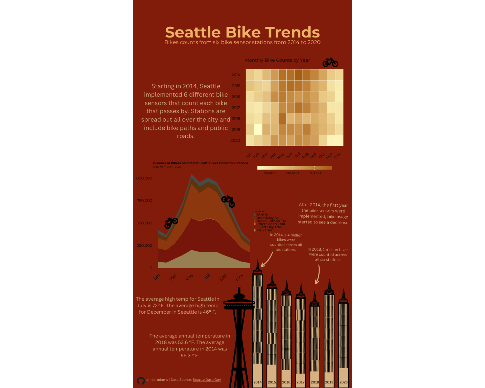
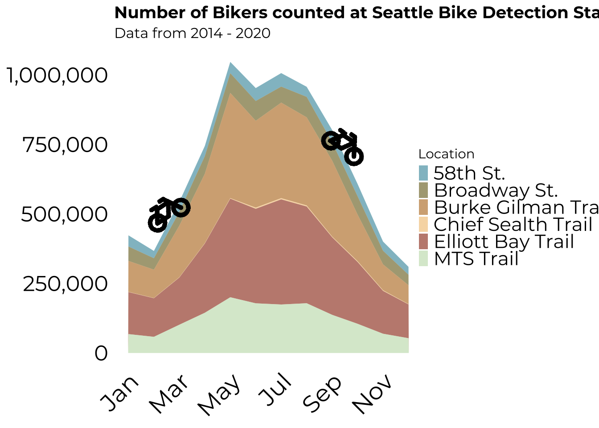
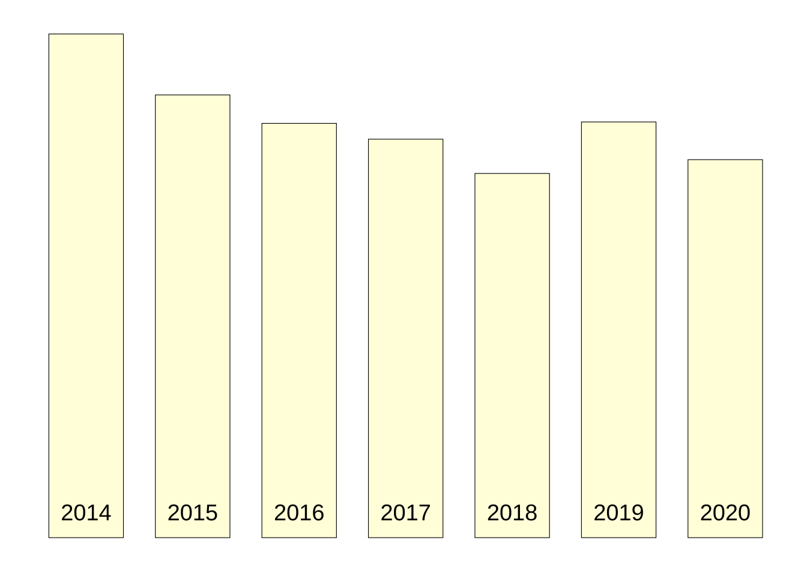
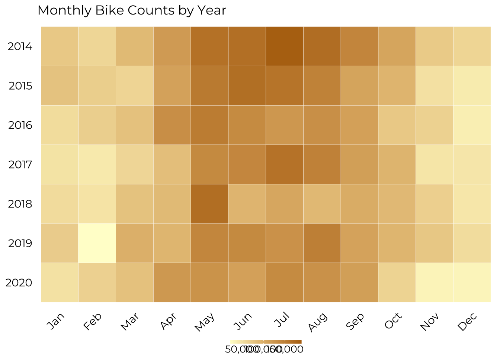
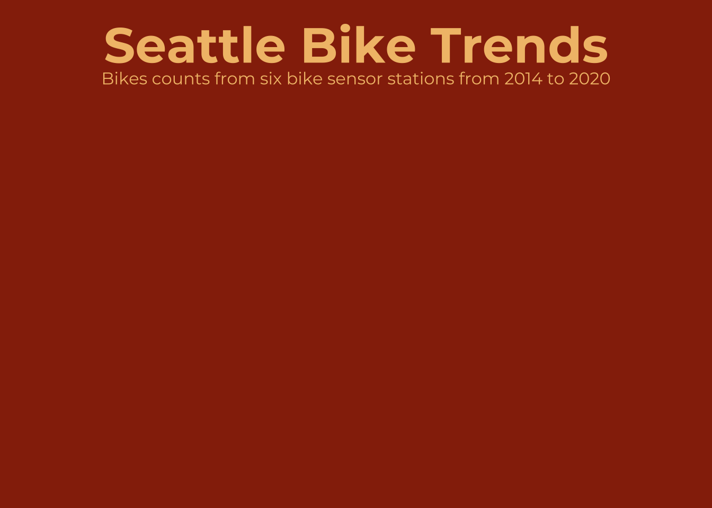
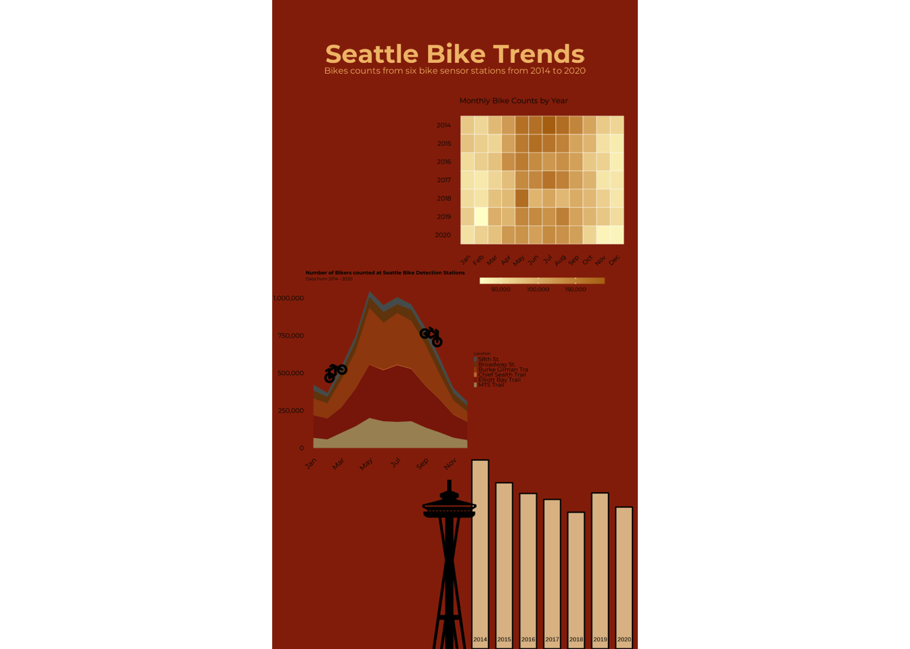

Infographic Overview
Below, I created an infographic to inform viewers on how bike usage changes seasonally and annually in Seattle, Washington. My goals of this infographic were to quantify the general number of bikes on the road in Seattle, compare bike usage across six different bike counting locations, and look into seasonal biking trends. In order to do this, I utilized data from Data.Seattle.gov. 1 I specifically utilized 6 different data sets that are all analogous in structure, but each for a different location. Each dataset contains four columns: the date, the number of bikes counted that were travelling northbound, the number of bikes counted that were travelling southbound, and the total number of bikes counted (the northbound column + the southbound column). The date column includes hourly data, so each observation in the dataset is a date and an individual hour. When I aggregated the six different locations into one data set, I added a column to specify the location, and removed the north and south bound columns.
To achieve the goals stated above, I created three different visualizations to include in my infographic. I first created a bar plot to show the total number of bikes counted in my aggregated dataset for each year (2014-2020). I also created an area graph that shows the total number of bikes counted monthly at each of the six different locations. Unlike the bar plot, this graph takes month and location into consideration. The third plot I created was a heatmap that aims to look at trends both monthly and yearly. I hoped that this plot could reveal any potential global warming trends- i.e. did biking start to become less popular in June as years progressed?
When creating these plots, I made many different considerations to implement my design. The first decision I made was which types of plots I would use to convey each of my goals. I decided on a bar plot for the yearly total number of bikes counted because it easily conveyed the differences among the years. I used an area plot specifically for the monthly data as I wanted to visualize how usage varies from location to location. This graph also allowed me to see if certain locations were more popular in certain months than others- for example, were bike trails more popular in summer than a busy street? Finally, I decided on a heatmap to visualize how bike usage changed across both month and year because the different tiles make the count of bikes digestable with a continuous color scale. On all these plots, I made updates to the plot titles. In the case of the bar plot, I removed the title all together and utilized annotations instead. To remove extra clutter, I removed every other x axis tick mark (month) in the area plot. I updated the font for all plots to be consistent with the infographic title font. I made these updates in the theme() layer of each plot. Other updates to the theme() layer include adjusting the margins of the legend, rotating the legend (for the heatmap), increasing legend size (for the heatmap and area plot), and updating the size of x and y axis tick marks/ labels (all three plots).
When arranging the elements in my infographic, I considered many different options to get my message across in a clean and concise way that was not visually overwhelming. I wanted my area plot and bar plot to be near each other, towards the bottom of the plot. I wanted these two plots to represent land type objects (the area plot a mountain, and the bar plot to be city buildings). I wanted them towards the bottom so they looked more grounded and didn’t represent a floating mountain/ buildings. Because of this, I placed the heatmap toward the top of the map. To eliminate too much text and blank space, I also added a space needle building image. I broke up the text into smaller chunks and spread them out to avoid paragraphs of text. In order to contextualize my data, I added a paragraph that provided a bit of background on the data itself and when it started to be collected. I also provided average annual and monthly temperatures via text boxes to allow viewers to contextualize what the temperatures might be when they see peaks and valleys of bike counts, both yearly and monthly. The central message that I wanted to get across was that time of year/ temperature played a large role in the number of bikers that were counted. I made this the central message not only through my plots, but also through the text and annotations that incorporated temperature in relation to each of the three plots.
Once I decided on the current color palette, I used color blind simulator to see if the palette I chose was color friendly. The color palette I chose was centered around differentiating the different locations in my area plot, and these differences were still clear among all color deficiencies. Before creating my infographic, I used a DEI lens by looking into the different locations that the bike sensors were implemented to see if they were in only wealthy neighborhoods that would likely count more bikes. The bike locations came from different road types (i.e. bike pathways, public roads, etc.) and were not privy to any certain area.
I have included all code to my three different visualizations below! All plots were generated using ggplot() and I used magick() to add these plots together create an infographic. Because I wanted to add on a few more compelx graphic design elements that could not be completed in R, I downloaded a png of my base infographic, and added some finishing touches in Canva. I hope you enjoy exploring my infographic and code below!
Seattle Bike Count Infographic
Code for Infographic Elements
Load Libraries
Code
library(showtext)
library(dplyr)
library(ggplot2)
library(sf)
library(ggmap)
library(tmap)
library(lubridate)
library(tidyverse)
library(ggimage)
library(patchwork)
library(ggtext)
library(magick)Import and Wrangle Data
Code
##~~~~~~~~~~~~~~~~~~~~~~~~~~~~~~~~~~~~~~~~~~~~~~~~~~~~~~~~~~~~~~~~~~~~~~~~~~~~~~
## import data ----
##~~~~~~~~~~~~~~~~~~~~~~~~~~~~~~~~~~~~~~~~~~~~~~~~~~~~~~~~~~~~~~~~~~~~~~~~~~~~~~
broadway<- read.csv(here::here("posts", "seattle_bike_infographic_viz", "raw-data","Broadway_Cycle_Track_North_Of_E_Union_St_Bicycle_Counter__Out_of_Service__20240202.csv"))
burke <- read.csv(here::here("posts","seattle_bike_infographic_viz","raw-data","Burke_Gilman_Trail_north_of_NE_70th_St_Bicycle_and_Pedestrian_Counter_20240202.csv"))
chief <- read.csv(here::here("posts","seattle_bike_infographic_viz","raw-data","Chief_Sealth_Trail_North_of_Thistle_Bicycle_Counter__Out_of_Service__20240202.csv"))
elliott <- read.csv(here::here("posts","seattle_bike_infographic_viz","raw-data","Elliott_Bay_Trail_in_Myrtle_Edwards_Park_Bicycle_and_Pedestrian_Counter__Out_of_Service__20240202.csv"))
mts <- read.csv(here::here("posts","seattle_bike_infographic_viz","raw-data","MTS_Trail_west_of_I-90_Bridge_Bicycle_and_Pedestrian_Counter__Out_of_Service__20240202.csv"))
fifty_eight <- read.csv(here::here("posts","seattle_bike_infographic_viz","raw-data","NW_58th_St_Greenway_at_22nd_Ave_NW_Bicycle_Counter__Out_of_Service__20240202.csv"))
##~~~~~~~~~~~~~~~~~~~~~~~~~~~~~~~~~~~~~~~~~~~~~~~~~~~~~~~~~~~~~~~~~~~~~~~~~~~~~~
## merge data ----
##~~~~~~~~~~~~~~~~~~~~~~~~~~~~~~~~~~~~~~~~~~~~~~~~~~~~~~~~~~~~~~~~~~~~~~~~~~~~~~
# rename total bike column for dataframes with bike only, create total bike column for dataframes with pedestrians ( since we dont want to include pedestrians in our dataframe)
#do this renaming and totaling schema for all 7 datasets
broadway <- broadway %>% rename("bike_total" = "Broadway.Cycle.Track.North.Of.E.Union.St.Total")
burke$bike_total <- burke$Bike.North + burke$Bike.South
chief$bike_total <- chief$Bike.North + chief$Bike.South
elliott$bike_total <- elliott$Bike.North + elliott$Bike.South
fifty_eight <- fifty_eight %>% rename("bike_total" = "NW.58th.St.Greenway.st.22nd.Ave.NW.Total")
mts$bike_total <- mts$Bike.East + mts$Bike.West
#rename southbound and northbound columns to have consistent naming for all datasets
#add locations column for each dataset with a string of what the location is
#do this renaming and adding column step for all 7 datasets
burke_clean <- burke %>%
rename("SB" = "Bike.South" , "NB" = "Bike.North") %>%
select(Date, bike_total, NB, SB, ) %>%
mutate(loc = "Burke")
chief_clean <- chief %>%
rename("SB" = "Bike.South" , "NB" = "Bike.North") %>%
select(Date, bike_total, NB, SB, ) %>%
mutate(loc = "Chief")
elliott_clean <- elliott %>%
rename("SB" = "Bike.South" , "NB" = "Bike.North") %>%
select(Date, bike_total, NB, SB, ) %>%
mutate(loc = "Elliott")
fifty_eight_clean <- fifty_eight %>%
rename ("EB" = "East", "WB" = "West") %>%
select(Date, bike_total, EB, WB) %>%
mutate(loc = "58th")
mts_clean <- mts %>%
rename("WB" = "Bike.West" , "EB" = "Bike.East") %>%
select(Date, bike_total, WB, EB, ) %>%
mutate(loc = "MTS Trail")
broadway_clean <- broadway %>%
mutate(loc = "Broadway")
#merge all cleaned dataframes that track north and south traffic
bike_data <- bind_rows(broadway_clean, burke_clean, chief_clean, elliott_clean, mts_clean, fifty_eight_clean)
##~~~~~~~~~~~~~~~~~~~~~~~~~~~~~~~~~~~~~~~~~~~~~~~~~~~~~~~~~~~~~~~~~~~~~~~~~~~~~~
## create filtered dataframes ----
##~~~~~~~~~~~~~~~~~~~~~~~~~~~~~~~~~~~~~~~~~~~~~~~~~~~~~~~~~~~~~~~~~~~~~~~~~~~~~~
# update bike data ( base data frame) date column to be in correct format, add year and month column for future filtering ------
#update Date column to type POSIXct for future wrangling, format = current way date column is formatted
bike_data$Date <- as.POSIXct(bike_data$Date, format = "%m/%d/%Y %I:%M:%S %p")
# create year column with year
bike_data$Year <- year(bike_data$Date)
#create month column with month
bike_data$Month <- month(bike_data$Date)
years <- c(2014,2015,2016,2017,2018,2019,2020)
bike <- bike_data[bike_data$Year %in% years, ]
#create a dataframe of daily with the date, location and sum of bike counts for that day (i.e. aggregate hourly counts to be daily)-----
bike_data_daily <- bike %>%
#create date column that is aggregated by day
mutate(date = floor_date(Date, unit = "day")) %>%
#group by date and location
group_by(date, loc) %>%
#create new column that has the daily count of bikes at each location each day
summarize(daily_sum = sum(bike_total, na.rm = TRUE), .groups = 'drop') %>%
#drop na values (0)
drop_na()
#create a dataframe that aggregates the monthly bike counts across all locations, should have two columns only ( month, monthly_total)
bike_data_monthly <-bike %>%
#group by month
group_by(Month) %>%
#create new column that has the monthly count of bikes at all locations
summarize(monthly_total = sum(bike_total, na.rm = TRUE)) %>%
#drop na values (0)
drop_na()
# create data frame of monthly bike counts at each locations, should have three columns ( month, monthly total, location)
bike_data_monthly_loc <-bike %>%
#group by month and location
group_by(Month, loc) %>%
#create new column that has the monthly count of bikes for each location
summarize(monthly_total = sum(bike_total, na.rm = TRUE)) %>%
#drop na values (0)
drop_na()
bike_data_year_month<- bike %>%
group_by(Year, Month) %>%
summarize(monthly_total = sum(bike_total, na.rm = TRUE)) %>%
#drop na values (0)
drop_na()
#make month a factor
bike_data_year_month$Month <- factor(month.abb[bike_data_year_month$Month], levels = month.abb)
#make year a factor
bike_data_year_month$Year <- factor(bike_data_year_month$Year)
#create filtered dataframe for heatmap
bike_data_yearly <- bike %>%
group_by(Year) %>%
summarize(yearly_total = sum(bike_total, na.rm = TRUE)) # add yearly totals for every month/yearAdd necessary fonts and icon files
Code
#add font awesome icons
# font_add(family = "fa-brands",
# regular = here::here("posts", "seattle_bike_infographic_viz","otfs", "Font Awesome 6 Brands-Regular-400.otf"))
# font_add(family = "fa-regular",
# regular = here::here("posts", "seattle_bike_infographic_viz","otfs", "Font Awesome 6 Free-Regular-400.otf"))
# font_add(family = "fa-solid",
# regular = here::here("posts", "seattle_bike_infographic_viz","otfs", "Font Awesome 6 Free-Solid-900.otf"))
#..........................import fonts..........................
# `name` is the name of the font as it appears in Google Fonts
# `family` is the user-specified id that you'll use to apply a font in your ggpplot
#add montserrat font
font_add_google(name = "Montserrat", family = "montserrat")
#................enable {showtext} for rendering.................
showtext_auto()Create area plot of monthly bikes counts at different locations
Code
#create breaks and labels for x axis labeling
month_breaks <- 1:12
month_labels <- c("Jan", "", "Mar","", "May", "", "Jul","", "Sep","", "Nov","")
#month_labels <- c("Jan", "Feb", "Mar", "Apr", "May", "Jun", "Jul", "Aug", "Sep", "Oct", "Nov", "Dec")
#create color palette
custom_colors <- c(
"Broadway" = "#706513",
"Burke" = "#B57114",
"Elliott" = "#962B09",
"Chief"= "#F2C078",
"MTS Trail" = "#C1DBB3",
"58th"= "#3891A6")
#create geom area plot to show how bike traffic changes seasonally across diff locations
# add data, fill area by location of bike sensor
mountain <- ggplot(data = bike_data_monthly_loc, aes(x = Month, y = monthly_total, fill = loc)) +
#decrease the opacity
geom_area(alpha = 0.6) +
#add color palette defined above
scale_fill_manual(values = custom_colors, labels = c("58th St.", "Broadway St.", "Burke Gilman Trail", "Chief Sealth Trail", "Elliott Bay Trail", "MTS Trail")) +
#add rotated upward bike image, play around with sizes to fit top ridge of graph
geom_image(y = 510000, x = 2.5, image = "images/rotate_up_bike.png", size = .2 ) +
#add rotated downward bike image, play around with sizes to fit top ridge of graph
geom_image(y = 750000, x = 9.5, image = "images/rotate_down_bike.png", size = .2 ) +
#add title, subtitle, x and y axis labels, and legend title
labs(title = "Number of Bikers counted at Seattle Bike Detection Stations ",
subtitle = "Data from 2014 - 2020",
x = "Month",
y = "Number of Bikers Counted",
fill = "Location") +
theme_minimal() +
#add values and labels to x axis
scale_x_continuous(breaks = month_breaks, labels = month_labels)+
#convert y axis labels to be a standard number ( including e before)
scale_y_continuous(labels = scales::comma)+
#update theme
theme(
plot.title = element_text( hjust = 0, face = "bold", size = 14 ), # shift title
plot.subtitle = element_text( hjust = 0, size = 12),
#remove grid elements and background elements
panel.grid.major = element_blank(),
panel.grid.minor = element_blank(),
axis.text.x = element_text(angle = 45, hjust = 1, colour = "black", size = 20, margin = margin(t = .4)),
axis.text.y = element_text( colour = "black", size = 18),
axis.line = element_blank(), # Removes axis lines
axis.ticks = element_blank(), # Removes axis ticks
axis.title.x = element_blank(), # Removes x-axis title
axis.title.y = element_blank(), # Removes y-axis title
panel.background = element_rect(fill = "transparent", colour = NA),
plot.background = element_rect(fill = "transparent", colour = NA),
text = element_text(family = "montserrat") ,
legend.margin = margin(t = -5, r = -10, b = -5, l = -10, unit = "pt"),
legend.box.margin = margin(t = 0, r = -5, b = 0, l = -5, unit = "pt"),
legend.spacing.x = unit(4, "pt"),
legend.spacing.y = unit(4, "pt"),
legend.key.size = unit(9, "pt"),
legend.text = element_text(size = 16)) # update font
# png('output/mountain.png',width = 10, height = 8, units = 'in', res = 300, bg = "transparent")
# print(mountain) # Ensure the plot is explicitly printed
# dev.off()
mountain
Create bar plot of total number of bikes counted per year
Code
#initiate ggplot with year
city_buildings <- ggplot(bike_data_yearly, aes(x = Year, y = yearly_total)) +
#add geom column layer, lower opacity, make width 1 so the bars are touching
geom_col(width = .7, alpha = .7, fill = "#FFFDD0", color = "black", size = .2) +
#add year at the bottom of each bar in green
geom_text(aes(label = Year, y = 0.05 * max(yearly_total)), size = 5, color = "black")+
# annotate(
# geom = "text",
# x = 2015,
# y = 1300000,
# label = "2014 experienced the highnest \nnumber of total bike counts, at a value of 1,409,933",
# size = 4,
# color = "black",
# hjust = 0.5) +
# ) +
# annotate(
# geom = "curve",
# x = 2014, xend = 2015,
# y = 750000, yend = 750300,
# curvature = -0.15,
# arrow = arrow(length = unit(0.3, "cm"))
# )
theme_minimal()+
#update theme
theme(
#remove grid elements and background elements
panel.grid.major = element_blank(),
panel.grid.minor = element_blank(),
panel.background = element_blank(),
plot.background = element_blank(),
axis.line = element_blank(), # Removes axis lines
axis.text.x = element_blank(), # Removes x-axis labels
axis.text.y = element_blank(), # Removes y-axis labels
axis.ticks = element_blank(), # Removes axis ticks
axis.title.x = element_blank(), # Removes x-axis title
axis.title.y = element_blank(), # Removes y-axis title
text = element_text(family = "montserrat") ) # update font
#ggsave('output/city_buildings.png', plot = city_buildings, device = 'png',width = 700, height = 800, units = 'px', dpi = 700)
city_buildings
Create heatmap to show how bike counts vary across both month and year
Code
#initiate ggplot with year and month, fill by monthly total
heatmap <- ggplot(bike_data_year_month, aes(x = Month, y = Year, fill = monthly_total)) +
geom_tile(color = "white") + # Add white border to the tile
scale_fill_gradient(low = "#FFFDD0", high = "#B57114", labels = scales::comma) + # Define colors for the gradient
theme_minimal() +
scale_y_discrete(limits = rev(levels(bike_data_year_month$Year))) + # Reverse order of years on y axis
labs(title = "Monthly Bike Counts by Year") + # Add title
guides(
fill = guide_colourbar(title = "Monthly Total", title.position = "bottom", title.hjust = 0.5, barwidth = 5, barheight = .25, # Adjust the size of the gradient bar here
label.position = "bottom")
) + # Adjust legend to show a continuous gradient
theme(
axis.text.x = element_text(angle = 45, hjust = 1, colour = "black", size = 11),
axis.text.y = element_text(colour = "black", size = 11),
panel.grid.major = element_blank(),
panel.grid.minor = element_blank(),
panel.background = element_rect(fill = "transparent", colour = NA),
plot.background = element_rect(fill = "transparent", colour = NA),
axis.line = element_blank(),
axis.title.x = element_blank(),
axis.title.y = element_blank(),
text = element_text(family = "montserrat"),
legend.position = "bottom",
legend.margin = margin(t = -5, r = -10, b = -5, l = -10, unit = "pt"),
legend.box.margin = margin(t = 0, r = -5, b = 0, l = -5, unit = "pt"),
legend.spacing.x = unit(2, "pt"),
legend.spacing.y = unit(2, "pt"),
legend.key.size = unit(1, "pt"),
legend.text = element_text(size = 10),
legend.title = element_blank()
)
#save png for infographic
#ggsave('output/heatmap.png', plot = heatmap, device = 'png',width = 500, height = 500, units = 'px', dpi =300)
heatmap
Infographic Base
Code
#.........................create caption.........................
bike_colors <- c("#706513", "#B57114", "#962B09", "#F2C078", "#C1DBB3","#3891A6")
txt <- bike_colors[4]
bg <- bike_colors[3]
accent <- txt
g_base <- ggplot() +
labs(
title = "Seattle Bike Trends",
subtitle = "Bikes counts from six bike sensor stations from 2014 to 2020",
) +
theme_void() +
theme(
text = element_text(family = "montserrat", size = 20, lineheight = 1.2, colour = txt), # Adjusted size and lineheight
plot.background = element_rect(fill = bg, colour = bg), # Ensure these are defined or replace with your variables
plot.title = element_text(size = 35, face = "bold", hjust = 0.5, margin = margin(b = 20)), # Adjusted size and margin
plot.subtitle = element_text(family = "montserrat", hjust = 0.5, margin = margin( t = -20, b = 30), size = 12), # Adjusted size and margin
plot.margin = margin(b = 10, t = 20, r = 10, l = 10) # Adjusted margins
)
g_base
Code
#ggsave('output/g_base.png', plot = g_base, device = 'png',width = 675, height = 1200, units = 'px', dpi = 300)Code
mountain_image <- image_read('output/mountain.png') %>%
image_trim()
buildings_image <- image_read('output/city_buildings.png') %>%
image_trim()
heatmap_image <- image_read('output/heatmap.png') %>%
image_trim()
space_needle_image <- image_read('output/SeattleSpaceNeedle.png')
title_image <- image_read('output/g_base.png')
title_image %>%
image_composite(image_scale(mountain_image, '470x'), offset = '+2+500') %>% # Top-left
image_composite(image_scale(buildings_image, "300x"), gravity = "Center", offset = "+180+425") %>% # Center-top
image_composite(image_scale(heatmap_image, "350"), offset = "+300+180") %>% # Bottom-left
image_composite(image_scale(space_needle_image, '100x'), gravity = "Center", offset = '-10+444') %>%
#image_border(color = "#FEF5EF", geometry = "20x20") %>%
image_write(path = "output/postcard.png")
infographic_base <- readPNG('output/postcard.png')
grid.raster(infographic_base)
Footnotes
Seattle Department of Transportation. (2023). Bike Counters. https://www.seattle.gov/transportation/projects-and-programs/programs/bike-program/bike-counters↩︎